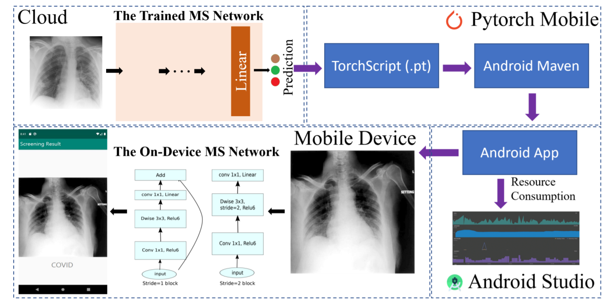

Chengyin LiPhD Candidate Department of Computer Science Wayne State University, MI Email:cyli@wayne.edu |
I am a Third-year PhD Candidate in the WSU. I received my M.E. degree from University of Chinese Academic of Sciences, and B.E. degree from Nanjing University of Science and Technology in 2013.
My research interests center around data mining and machine learning including deep learning with applications to healthcare.
|  |
COVID-MobileXpert: On-Device COVID-19 Patient Triage and Follow-up using Chest X-rays. Xin Li, Chengyin Li, and Dongxiao Zhu BIBM,2020. [Paper] |
|
Spatial-temporal PM2.5 monitoring and reporting system. Chengyin Li [Website] |